网络表情包发展史
--------有我们笑中带泪的青春
文章来源：微信公众号 发表时间：2015/11/25《牛津词典》不久前评选出了2015年度的年度词汇。大跌眼镜的是，今年的年度词汇竟然是Face with tears of joy（喜极而泣的脸庞）。 是啦，就是微信里那个哭笑不得的表情……
其实这个表情当年推出后，明察秋毫的群众们迅速解读出了一个别样的内涵：这其实不是掉泪，而是流鼻涕……
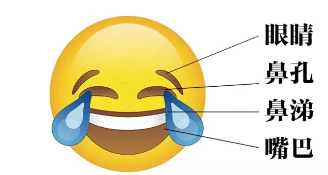有人进一步举证称，为什么微信表情里的“流泪”如瀑布泉涌，“大哭”才两滴眼泪？难道真的不是鼻涕吗！ 传到后来，腾讯有些内部员工自己都晕了，眼泪派和鼻涕派发生了激烈的争执。最后还是马化腾出面平息了纷争。
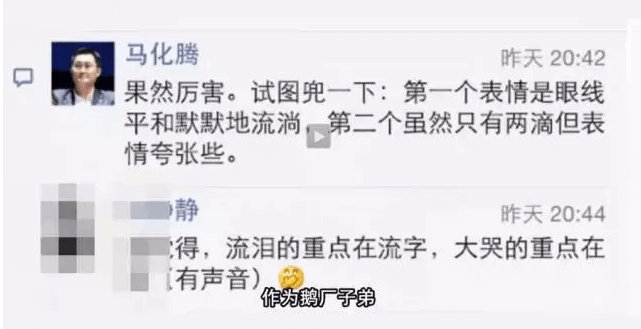网络表情的发展史，跟每个人都有交集。
1982年9月19日，美国卡耐基·梅隆大学的x斯科特·法尔曼教授在电子公告板上，第一次输入了这样一串ASCII字符：“:-)”。人类历史上第一个符号表情就此诞生。 在互联网刚开始在中国普及的20世纪末，这张笑脸风靡了大大小小的网络聊天室。多少人在网吧里敲下这一串字符，开启了跨越天南海北的相逢故事。
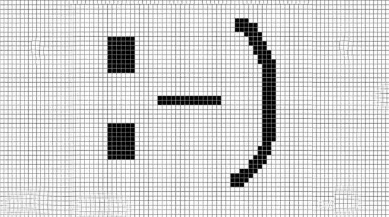1999年，QQ问世。那些用着64k调制解调器，听着滴滴答答的拨号音上网的岁月里，拥有一个QQ号，使用QQ小黄脸等“骨灰级”网络表情，迅速成了网民的身份象征。看看曾经的表情对话框，已是职场中坚、为人父母的70后、80后们，有没有回忆起当年尚是水晶女孩、追风少年的青春岁月:-)
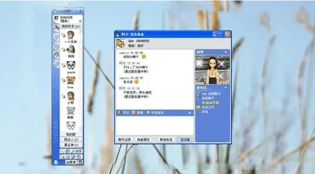小黄脸系列表情一直火到了今天。根据腾讯的统计，中国网民2014年通过QQ发送了超过10亿次“龇牙”表情，排名第二的是“发怒”，“亲亲”表情排在第三，民间呼声最高的“抠鼻”也杀进前七。毕竟这个内心戏最为丰富的表情，曾有过很多不平凡的故事…
2003年，QQ秀的横空出世，在表情界再掀起腥风血雨
如果你有一个高级QQ秀，聊天对话框的表情会直接在QQ秀的窗口进行表情动画直播，开通黄钻曾经是多少帅哥美女的梦想。 看，多么炫酷！
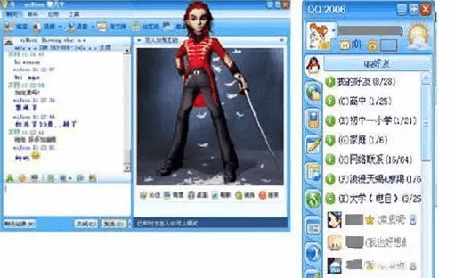很雷吗？还好啦，毕竟当年我们对时尚的定义是这样的……
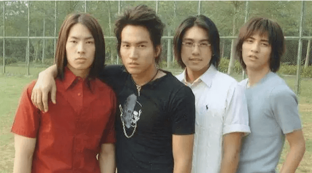 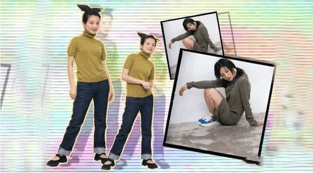随着QQ新版本的推出，动图和自定义表情开始崭露头角。 从此，表情在即时通讯场景中的地位不可撼动，成为聊天必备圣品。 请感受一下最早流行的自定义表情……
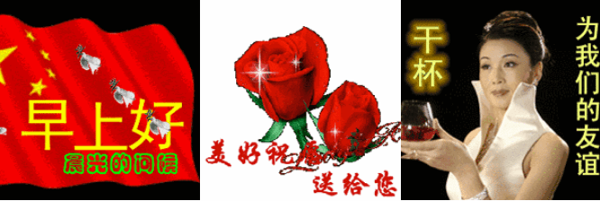感慨哟，时隔十余年，这批表情依然作为中老年表情包而活跃在一线，成为父母一辈微信聊天时最炙手可热的美图！
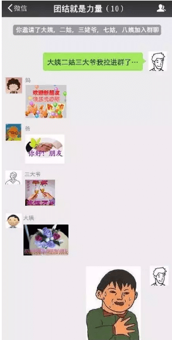对于我等吐槽，老妈通常会甩出另一张自定义表情来回应：
妈，我错了…
继续跳回2003年，伴随着QQ群的问世，
人民群众也迅速顺迎潮流，闪烁出新的智慧火花， 一大波QQ群表情如雨后春笋般崛起。
一晃几年过去，随着90后、00后开始涌入社交网络，自定义表情的创作路线就开始如脱了缰的野狗一般日益欢脱，二次元的力量初试啼声。 比如语文课本上的杜甫，华丽变身，历史发生颠覆性巨变……
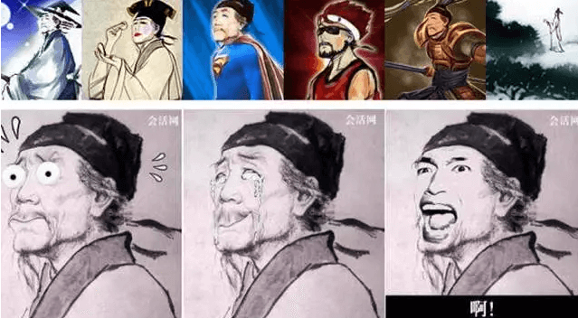而表情包的问世，也让自定义表情届的三大巨头——姚明、金馆长（韩国喜剧人物）、花泽香菜（拥有魔性笑容的日本声优）一夜崛起！ 他们仨~
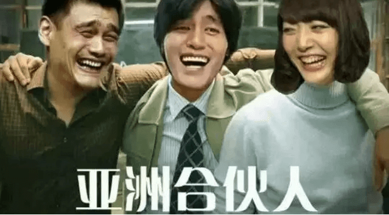姚明大哥白天打球，晚上还要被黑……他不仅代表CBA最高水准，也是表情界一哥。真人漫画效果一起来，占据聊天圈的绝对地位。
金馆长也是表情历史上不得不提的风云人物，因为他的到来，为日后暴漫斗图奠定了坚实的基础。

巾帼不让须眉，花泽香菜是三巨头中唯一的女性，然而她的“兵库北”被列为经典，一起感受一下。
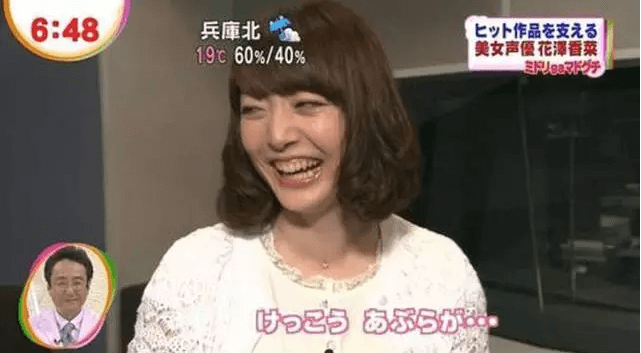随着群众创作热情的空前高涨，不少童年记忆中的知名IP也迎来第二春。尔康、雪姨、甄嬛等从此成为表情红人。曾经，我们的暑假一定是吃着棒冰，看着还珠，根据播放进度计算假期余额的。此刻，QQ群和朋友圈依然有还珠帮不朽的身影。
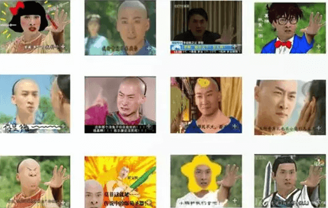不知不觉，我们的假期被甄嬛传取代。“又要早起上课了，臣妾做不到啊……”、“宿舍宫斗剧又要开演，唉，贱人就是矫情……”
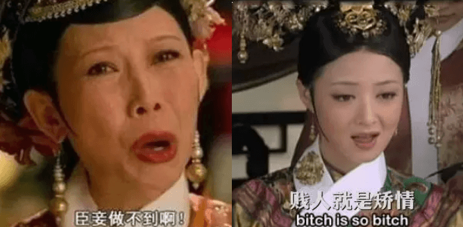而在微信时代，通常被加入一个群之后，斗表情成为打开局面的绝佳聊天方式。 据说曾有人对话两百多个来回，一个字都没有，全是表情……
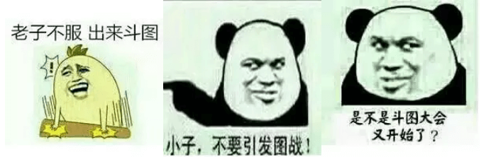这其中有看热闹的……
有保持冷漠，不在乎的……
有不屑翻白眼的……
还有就是战败的，虽然流泪，却不会轻易狗带的……

不少网友的自定义表情都已经躺满好几十页啦，可就是舍不得删。毕竟，这些小小的图片和像素块记载的就是我们的青春。